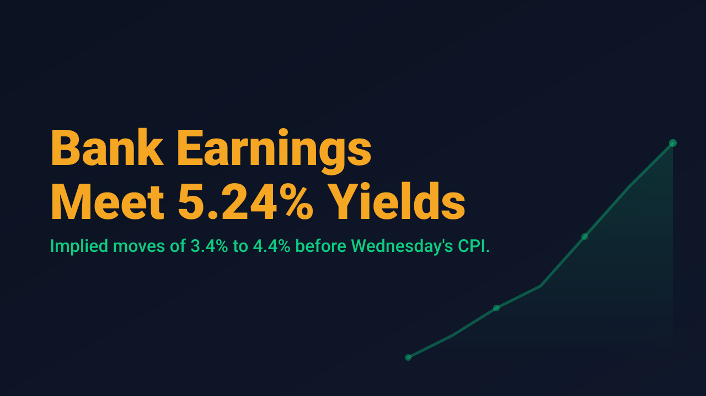
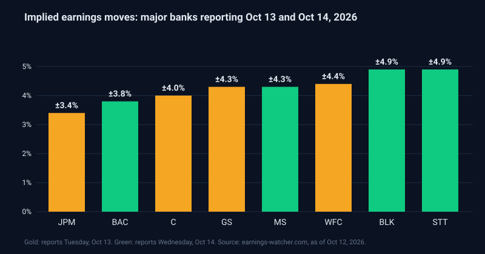

Bank Earnings Meet 5.24% Yields

The largest US banks open third-quarter earnings season on Tuesday, October 13, with JPMorgan Chase, Goldman Sachs, Wells Fargo and Citigroup all scheduled to report before the open. The September Consumer Price Index follows on Wednesday. Premarket, Benzinga showed Dow futures up 0.50%, S&P 500 futures up 0.01% and Nasdaq 100 futures down 0.44%, a split that points to rotation toward financials and away from the technology complex rather than a broad risk-on tone.
Options markets are pricing meaningful reactions. As of October 12, implied earnings moves were 3.4% for JPMorgan, 4.0% for Citigroup, 4.3% for Goldman Sachs and 4.4% for Wells Fargo on Tuesday. On Wednesday, Bank of America is priced at 3.8%, Morgan Stanley at 4.3%, and both BlackRock and State Street at 4.9%. These figures are market-implied estimates that change daily with option prices, not forecasts of direction.

The rate backdrop raises the stakes. The 10-year Treasury yield closed near 5.24% on Friday after briefly touching almost 5.37% two days earlier, its highest level in more than 24 years, according to Investopedia. Schwab notes that consensus expects September headline CPI of +0.6% month over month and core CPI of +0.2%. Energy remains a driver, with Brent futures near $105 and WTI around $92 in early trading on Tuesday, per Benzinga.
Schwab, citing FactSet, puts expected third-quarter earnings growth at about 3% for the financial sector, against 29.6% for the S&P 500. It also reports that only about 35% of S&P 500 stocks sit above their 50-day moving average. Low expectations for banks can cut both ways: a modest beat may be absorbed quietly, while weak net interest income or credit commentary can produce an outsized gap against a narrow market.
For swing traders, the practical issue is event clustering. Bank earnings on Tuesday and CPI on Wednesday morning create two consecutive overnight gap risks, and implied moves near 4% on large financials are wide for names that often trade on slower catalysts. Premium sellers are being paid for that risk, but the payoff is asymmetric if either event breaks hard.
Earnings reactions in the first hours are often revised once CPI prints, so a position sized only for the bank event can be mis-sized for the day after. The disciplined approach is to define the loss tolerance for both catalysts before entry, not after the first gap.